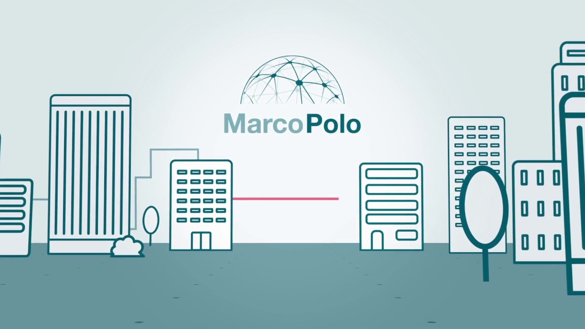
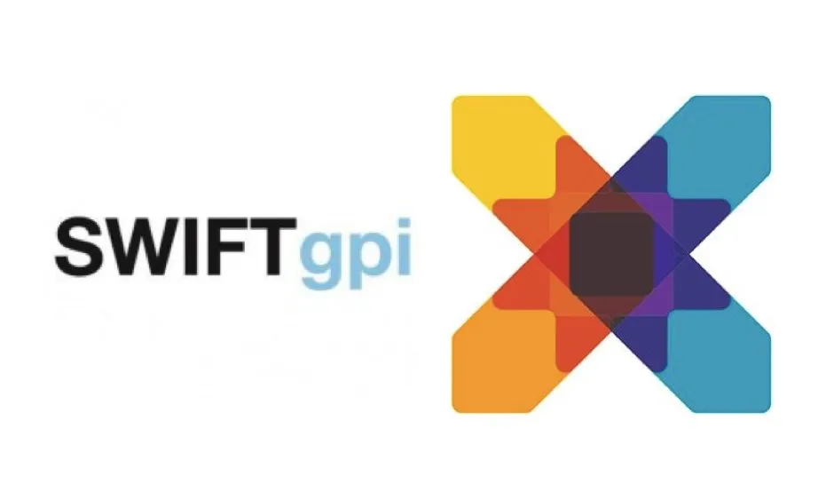

Банковская сфера
Современная банковская система не идеальна. Клиенты платят банкам высокие комиссии и не понимают, куда именно идут их деньги. Банки должны содержать большой штат сотрудников и использовать не всегда надежную систему межбанковских переводов SWIFT. Государства несут риски попасть под санкции и оказаться в финансовой блокаде в случае отключения SWIFT, как было с Ираном и КНДР.
Использование блокчейна позволяет исключить посредников при выполнении банковских операций и автоматизировать многие процессы. Эффективность банковской системы повышается также за счет снижения затрат. Банки могут получить дополнительные источники доходов, благодаря появлению новых бизнес-моделей и продуктов на основе блокчейна.
Так в марте 2019 года немецкие банки Commerzbank и Landesbank Baden-Wuerttemberg провели тестовые сделки на новой блокчейн-платформе для торгового финансирования Marco Polo, предлагающей услуги факторинга, дисконтирования дебиторской задолженности и оплаты обязательств. Сейчас это один из лидеров среди блокчейн-платформ для торгового финансирования: ее бизнес-модель нацелена на быстрое расширение, благодаря низкому порогу входа и возможности интеграции с другими блокчейн-платформами.
Блокчейн позволяет проводить быстрые и дешевые переводы. Это особенно актуально для трансграничных переводов и микроплатежей, где банковская комиссия может быть сопоставима с суммой перевода. Пока в банках такие транзакции проходят долго (до 3-5 рабочих дней) и стоят дорого (от 1% от суммы). В мировом масштабе это огромные расходы. В криптовалютных сетях переводы занимают несколько минут и стоят существенно дешевле. Так, транзакция на 45,5 тысяч биткоинов (около $280 млн) летом 2018 года в блокчейне стоила всего $0,04 и прошла за несколько минут. В такую же сумму обошлась транзакция в сети Лайткоин на сумму $100 млн весной 2018 года.
Блокчейн автоматизирует процессы и ускоряет обработку операций. Это позволяет снизить издержки и сократить штат сотрудников. Блокчейн дает возможность избавиться от сложного документооборота, ведь любую операцию можно проследить. Гарантом неизменности данных служит сама технология, человеческий фактор исключается. Уже есть проекты на блокчейне в сфере выдачи кредитов, идентификации клиентов, корпоративного финансирования.
Блокчейн обеспечивает иммутабельность сделок, т.е. невозможность внести изменения задним числом и подделать отчетность. Банковская система не прозрачна. Блокчейн позволит сделать все операции прозрачными и повысить уровень доверия между всеми участниками.
Эксперты подсчитали, что только на Западе за счет внедрения блокчейна банки могут сэкономить 8 миллиардов из общей суммы расходов в 30 миллиардов долларов. В 2012—2016 годах многие банки рассматривали возможность внедрения блокчейна и финансировали разработки в этой нише. Но добиться серьезного прорыва за счет блокчейна пока не удалось.
Сегодня перспективы блокчейна в финансовом секторе уже не кажутся безусловными. Например, основатель Эфириум Виталик Бутерин считает, что основные сферы применения блокчейна — это криптовалюты и трансграничные платежи. Можно ли применить его во всех остальных областях — под большим вопросом.
SWIFT — система всемирных межбанковских финансовых каналов связи, которая действует с 1973 года и работает с 11 000 банков и других финансовых учреждений.
Транзакции через компьютерный терминал попадают в универсальный компьютер, собираются в процессоре и обрабатываются в операционном центре, после чего отправитель получает уведомление о положительном или отрицательном результате. Систему часто критикуют за недостаточную защиту данных клиентов, к тому же срок обработки платежей достигает 5 дней.
Транзакции в блокчейн-сетях значительно быстрее и дешевле, и в последние годы у SWIFT стали появляться конкуренты. Одним из первых стала блокчейн-платформа Ripple, созданная специально для работы в банковском секторе. Ее принцип работы похож на принцип работы SWIFT, главное отличие — децентрализация. За несколько лет работы продукты компании стали использовать более 200 финансовых учреждений.
Но SWIFT предложила свое решение: несколько лет назад компания внедрила GPI (Global Payments Innovation) — систему облачных вычислений, позволяющую корпоративным клиентам банка быстрее совершать и отслеживать платежи. В ответ глава Ripple Брэд Гарлингхаус заявил, что это напоминает гонку машины против лошади с телегой. При отключении серверов с софтом GPI станет недоступен, а Ripple продолжит работать, пока ее поддержит хотя бы один из множества серверов.
Как оказалось, блокчейн — не универсальная технология для банков. консорциум R3 с самого начала делал упор на необходимости обрабатывать огромные массивы данных без вмешательства третьих лиц и с сохранением прозрачности процессов. Поэтому в 2017 году консорциум отказался от блокчейн-разработок. Разработчики заявили, что технология не предназначена для обработки крупных массивов данных, плохо совместима с банковскими стандартами, ее реализация не вписывается в их видение.
Технически блокчейн требует огромной емкости для хранения данных, ведь каждый узел должен хранить копию состояния всей цепи. А по прогнозам, к 2020 году в мире будет подключено 20 миллиардов устройств: для блокчейна это невероятный объем данных.
У блокчейна есть проблемы с регуляторами, а также с масштабируемостью и безопасностью. Хотя взломать блокчейн-сеть крайне сложно (за десять лет существования биткоина никому не удавалось), в небольших сетях есть возможность «Атаки 51%».
Разработки в этой нише продолжаются. В 2019 году в Европе появилась International Association for Trusted Blockchain Applications — IATBA, Европейская Международная Ассоциация Доверенных Блокчейн-компаний, в составе которой 9 банков. Ее работа должна способствовать созданию в Европе блокчейн-инфраструктуры с соблюдением всех требований безопасности и избавлению от регуляторной неопределенности. Создатель Ассоциации — Европейское блокчейн-партнёрство (European Blockchain Partnership).
Растет количество блокчейн-проектов вне банков. По данным исследования 2019 года, в Швейцарии активно развиваются финансовые компании, работающие в сфере высоких технологий, в том числе блокчейна. В начале 2019 года таких компаний уже 356: это на 62% больше, чем в 2018 году. Сегодня в Швейцарии через блокчейн-платформы проходит значительный объем транзакций. Понемногу такие компании отвоевывают долю рынка у банков и других традиционных финансовых институтов. И это Швейцария, один из лидеров мирового финансового рынка.
Несмотря на отсутствие революции на блокчейне, банки не отказались от исследований этой технологии. Финансовые учреждения активно регистрируют патенты на блокчейн: у народного банка Китая 40 таких патентов, у Bank of America — более 50. Патенты имеют Western Union, платежные системы Visa и MasterCard.
В России тестовые блокчейн-транзакции между несколькими банками впервые прошли осенью 2016 года. Для этого использовался код Ethereum; в разработке участвовали Банк «Открытие», Альфа-банк, Тинькофф и Qiwi. Исследования блокчейна стартовали позже, чем на Западе, но шли очень интенсивно. Тогда же был создан банковский консорциум «Финтех» в составе 10 российских банков. Сбербанк присоединился к платформе Hyperledger. Разворачивались прототипы на блокчейне, объявлялись тендеры на разработку ПО.
Но на планах Сбербанка это мало отразилось: в том же 2017 году банк провел первую транзакцию на платформе IBM Blockchain. В 2018 году Сбербанк открыл свою блокчейн‐лабораторию, выпустил облигации на смарт‐контрактах и провел тестовое ICO.
Количество блокчейн-разработок в финансовом секторе России продолжает расти и сегодня. В 2019 Сбербанк, Альфа-банк и АФТ получили премию Finaward в номинации «Пилот в блокчейне».
Внедрение блокчейна в банковскую сферу представляет собой парадокс. Суть блокчейна в децентрализации, суть банковской системы — в полной централизации и тотальном контроле. Биткоин (как главный пример применения блокчейн-технологий) был создан как альтернатива традиционной платежной системе, то есть в противовес банкам. Другими словами, сейчас в банковскую систему пытаются интегрировать то, что было задумано для ее разрушения.
Инвестиции в блокчейн могут разрушить существующую бизнес‐модель банков. Если блокчейн оправдает ожидания, банки смогут предоставлять услуги быстрее, дешевле и проще, что приведет к падению их доходов — а им это невыгодно. Кроме того, под угрозой могут оказаться миллионы рабочих мест.
Несмотря на серьезные недостатки существующей банковской системы, у нее есть свои плюсы: есть разработанная регуляторная база, страхование вкладов. возможность отменить ошибочную транзакцию и получить возмещение в случае хакерской атаки. У блокчейн-сетей всего этого пока нет, зато есть много проблем, которые нужно решить: это проблемы с масштабируемостью, пропускной способностью, безопасностью.
Есть два основных подхода к использованию блокчейна в финансах:
Блокчейн долгое время считался революционной технологией, но любая технология имеет значительную ценность лишь в том случае, если она представляет собой самое простое решение проблемы. Недостатки блокчейна можно устранить или хотя бы минимизировать, но для этого нужно время и четкое понимание, что именно блокчейн станет лучшим решением. Сейчас такая уверенность есть не у всех.